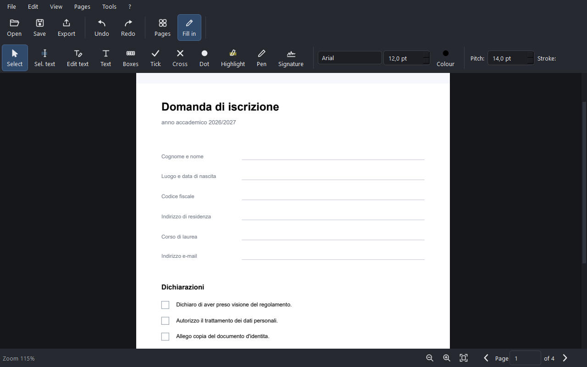
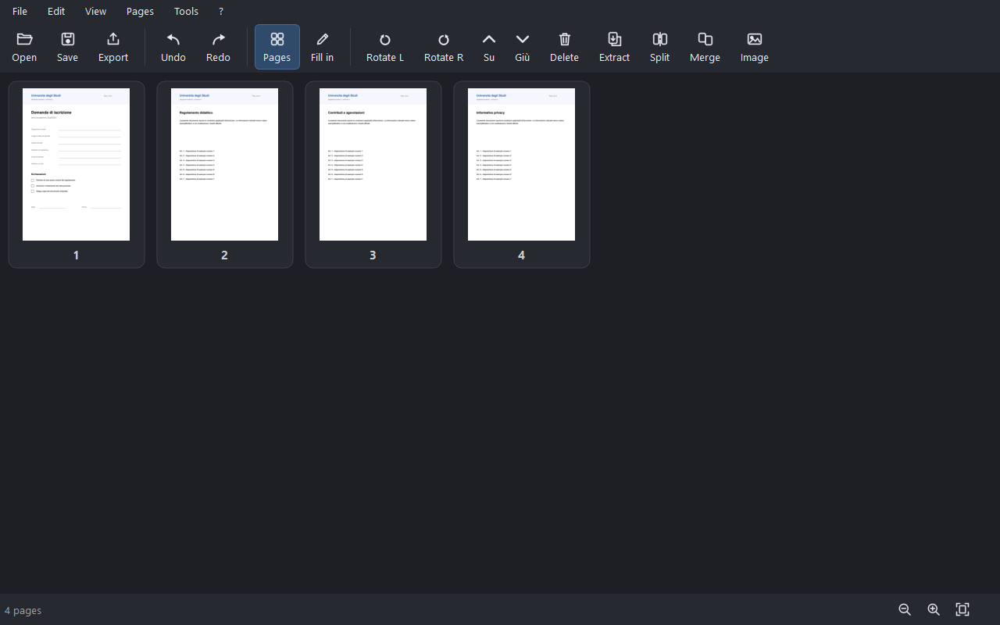
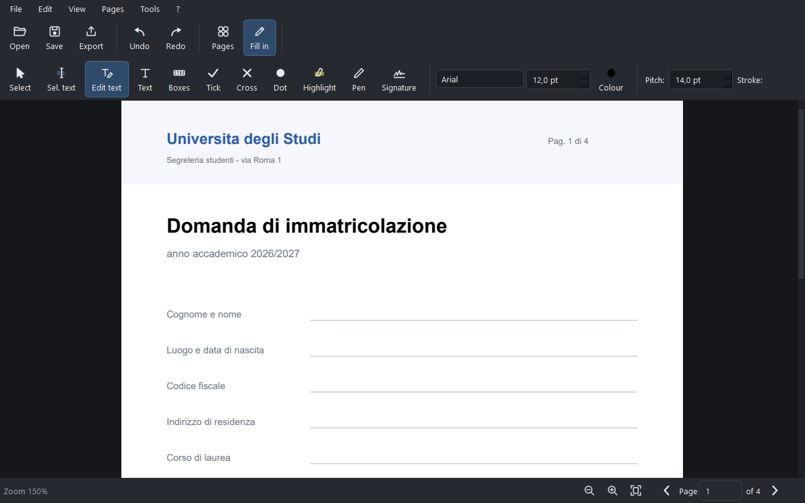
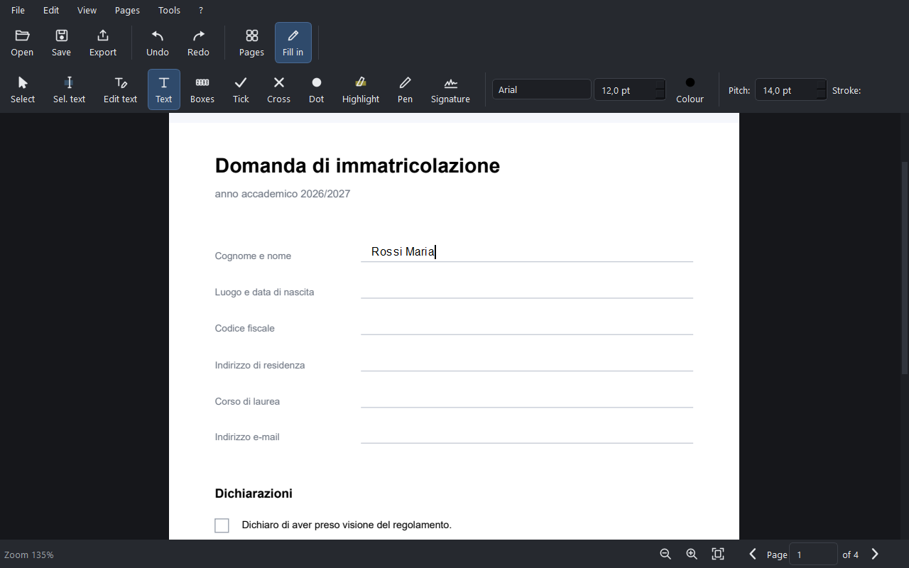
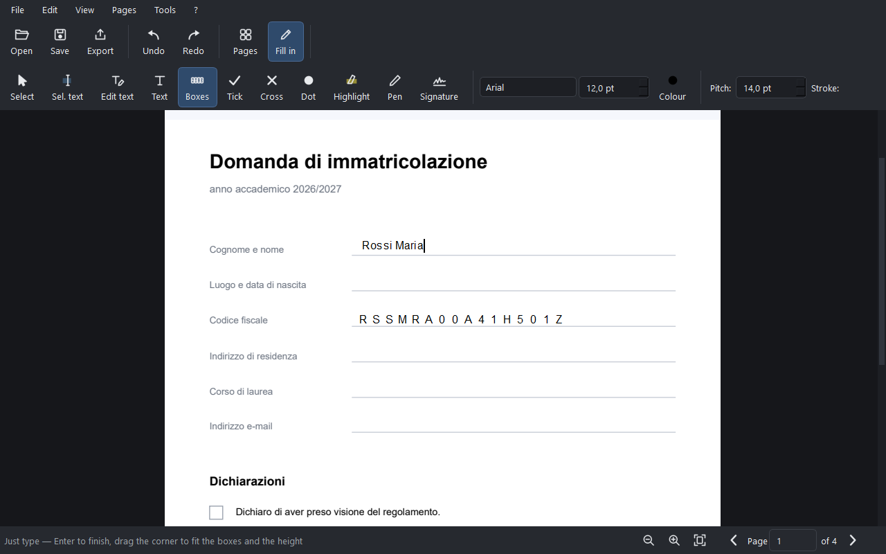
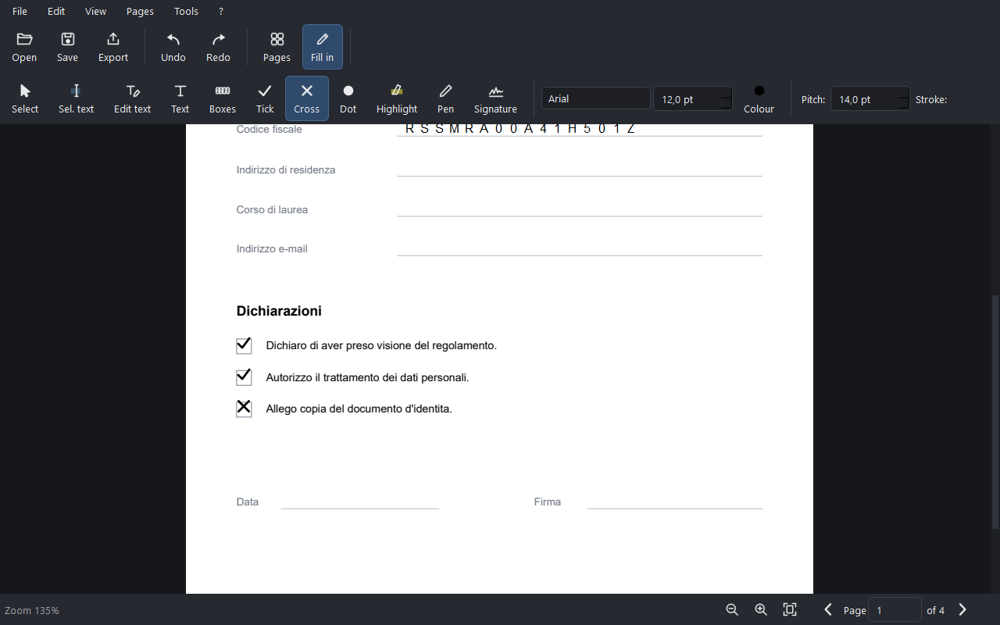
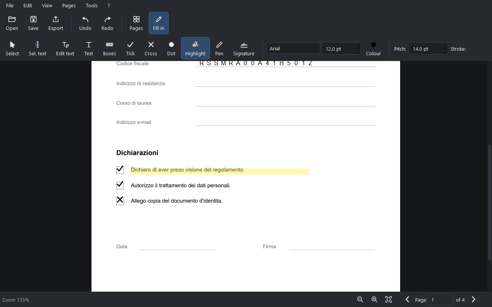
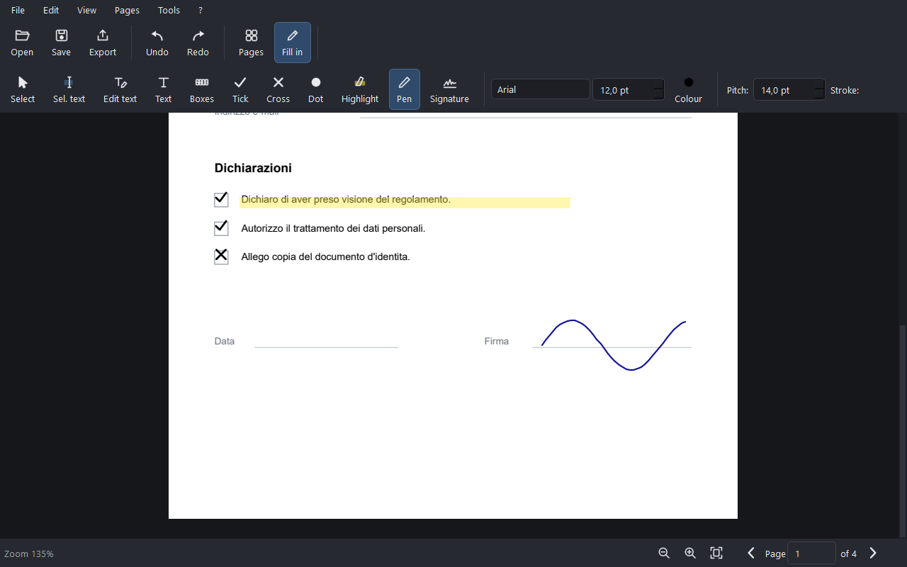
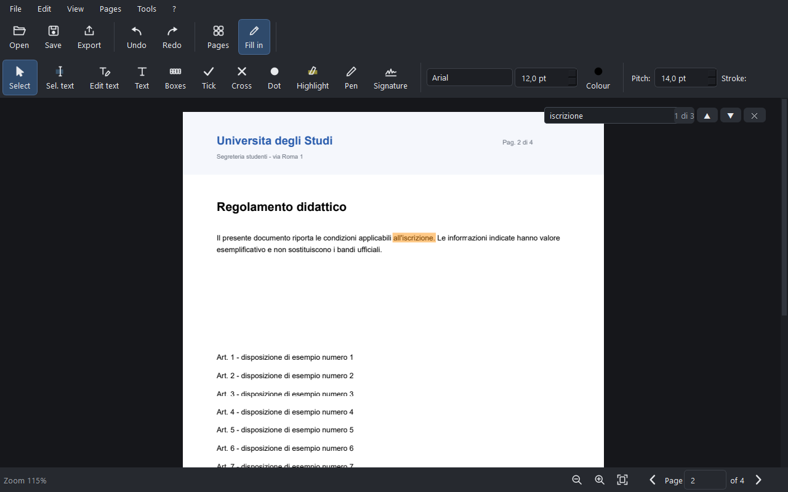
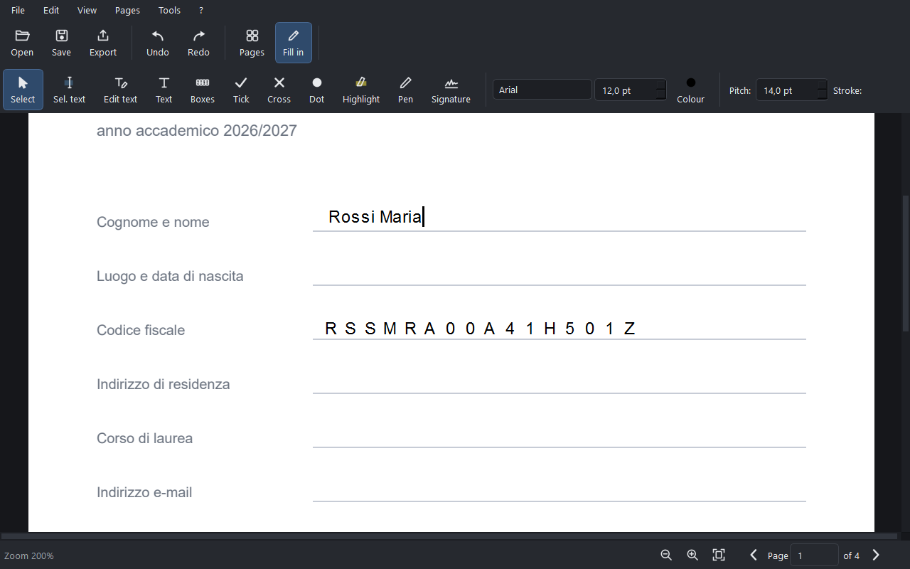

Guida
Come si fa
Ogni funzione in pochi passi, con le schermate prese dal programma vero. Se una cosa non ti torna, cerca la voce qui sotto: c'è il percorso esatto del menu da seguire.
Indice
- Aprire un PDF
- Organizzare le pagine
- Modificare il testo esistente
- Aggiungere testo nuovo
- Codice fiscale e IBAN nelle caselle
- Spunte, croci e pallini
- Evidenziare
- Penna e firma a mano
- Cercare nel documento
- Ingrandire
- Compilare un modulo AcroForm
- Firma digitale con valore legale
- Rendere cercabile una scansione
- Confrontare due PDF
- Numeri, filigrana, intestazioni, Bates
- Password e compressione
- Salvare o esportare?
- Attivare la licenza
Aprire un PDF
- File → Apri… (o Ctrl+O), oppure trascina il PDF dentro la finestra.
- Ti ritrovi nella vista Modifica e compila: qui si scrive sulla pagina.
- Passi all'altra vista con i pulsanti Pagine e Compila della barra, o con Ctrl+1 e Ctrl+2.

Organizzare le pagine
- Vai su Pagine (Ctrl+1): vedi le miniature di tutto il documento.
- Riordinare: trascina una miniatura dove vuoi. Per spostarne tante, selezionale (Ctrl+clic) e usa Pagine → Sposta pagine su / giù / all'inizio / alla fine.
- Ruotare: Pagine → Ruota a sinistra o Ruota a destra.
- Eliminare: seleziona e Pagine → Elimina pagine.
- Unire un altro PDF: Pagine → Unisci PDF…
- Inserire un'immagine come nuova pagina: Pagine → Inserisci immagine…
- Estrarre alcune pagine in un file a parte: Pagine → Estrai pagine…
- Dividere il documento in più file: Pagine → Dividi documento…

Modificare il testo che è già nel PDF
- Vista Compila (Ctrl+2).
- Scegli lo strumento Mod. testo nella barra.
- Clicca sul testo che vuoi cambiare: si apre un campo di scrittura esattamente sopra la riga, con lo stesso carattere e lo stesso corpo.
- Scrivi. Ctrl+Invio conferma, Esc annulla, e un clic fuori conferma.
- Ctrl+B e Ctrl+I mettono grassetto e corsivo mentre stai scrivendo.

Aggiungere testo dove non c'è
- Strumento Testo.
- Clicca nel punto della pagina dove vuoi scrivere.
- Digita. Carattere, corpo e colore si scelgono nei campi a destra della barra prima o dopo aver scritto.
- Con lo strumento Seleziona puoi poi spostare la casella o ridimensionarla dagli angoli.

Codice fiscale, IBAN e moduli a caselle
È il caso classico dei moduli della pubblica amministrazione: una lettera per casella, e allinearle a mano è un incubo.
- Strumento Caselle.
- Clicca all'inizio della fila di caselle.
- Scrivi normalmente: ogni carattere finisce nella sua casella.
- Se il passo non coincide con quello del modulo, regolalo con Passo nella barra, oppure trascina l'angolo della casella per adattare larghezza e altezza.
- Invio per terminare.

Spunte, croci e pallini
- Strumento Spunta (✓), Croce (✗) o Pallino (●).
- Clicca dentro la casellina da barrare: il segno si posiziona centrato sul punto cliccato.
- La dimensione e il colore si regolano nella barra.

Evidenziare
- Strumento Evidenzia.
- Trascina sopra la riga da evidenziare, come faresti con un evidenziatore vero.

Penna e firma a mano
- Strumento Penna: disegni a mano libera, con spessore e colore regolabili nella barra. Va bene per firmare al volo, anche col touchpad.
- Strumento Firma: apre la finestra della firma grafica, dove puoi disegnarla, scriverla a tastiera scegliendo un carattere corsivo, e riusarla.

Cercare nel documento
- Ctrl+F, oppure Strumenti → Trova nel documento…
- Scrivi e premi Invio: il contatore accanto al campo mostra a quale risultato sei su quanti.
- Le frecce ▲▼ passano al precedente e al successivo, saltando anche da una pagina all'altra. Esc chiude.

Ingrandire
- Ctrl + rotellina del mouse per lo zoom continuo.
- I pulsanti in basso a destra fanno zoom −, zoom + e adatta alla finestra.
- Ctrl+0 torna alla dimensione di partenza.

Compilare un modulo AcroForm
Alcuni PDF hanno campi interattivi già pronti (li riconosci perché ci clicchi dentro e appare il cursore). Per quelli c'è una finestra dedicata che li elenca tutti.
- Strumenti → Compila modulo (AcroForm)…
- Compila i campi nell'elenco e conferma.
Firma digitale con valore legale (PAdES)
- Collega il dispositivo di firma (kit con smart card o token, SPID, CNS).
- Strumenti → Firma digitale (PAdES)… e segui la finestra.
- Per controllare un documento firmato da altri: Strumenti → Verifica firme digitali…
Rendere cercabile una scansione (OCR)
- Strumenti → Riconosci testo (OCR)…
- Scegli la lingua (italiano o inglese) e avvia.
- Finito il riconoscimento, il testo si può cercare e selezionare come in un PDF normale.
Confrontare due PDF
- Apri la prima versione del documento.
- Strumenti → Confronta con un altro PDF… e scegli la seconda.
- Le differenze vengono evidenziate: utile per contratti e revisioni di tesi.
Numeri di pagina, filigrana, intestazioni, Bates
Sono tutte nel menu Strumenti e agiscono su tutto il documento o sull'intervallo di pagine che scegli nella finestra.
- Strumenti → Numeri di pagina…
- Strumenti → Filigrana… — testo in trasparenza sopra le pagine
- Strumenti → Intestazione e piè di pagina…
- Strumenti → Numerazione Bates… — la numerazione progressiva usata in ambito legale
Password e compressione
- Strumenti → Proteggi con password… — cifratura AES-256.
- Strumenti → Rimuovi password da un PDF… — serve conoscere la password.
- Strumenti → Comprimi PDF… — per rientrare nei limiti di dimensione degli allegati e dei portali.
Salvare o esportare? La differenza che conta
È il malinteso più frequente, e vale la pena chiarirlo una volta per tutte.
- Salva progetto (Ctrl+S) → crea un file
.pennino. È il tuo lavoro in corso: tutto resta modificabile per sempre e il PDF di partenza non viene mai toccato. Non mandarlo a nessuno: fuori da Pennino non lo apre nulla. - Esporta PDF… (Ctrl+E) → crea il PDF finito, quello da inviare, caricare o stampare.
- File → Esporta pagine come immagini… → PNG delle pagine.
- File → Stampa… (Ctrl+P).
Attivare la licenza
- Dopo l'acquisto ricevi una chiave via e-mail.
- Nel programma: ? → Attiva licenza… e incolla la chiave.
- Cambi computer? ? → Disattiva su questo dispositivo… e riattivala sull'altro.
Non hai trovato quello che cercavi? Scrivimi: le domande che ricevo più spesso finiscono in questa pagina.